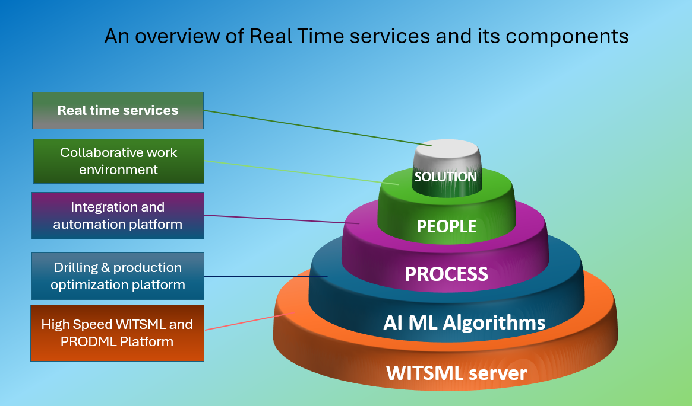

Real time services provides drilling and production operation intervention support by remote located experts at right time, by leveraging the real time data storage, transmission and visualization technologies. Near real time bidirectional data transmission and deployment of robust AI, ML algorithms on real-time data can enable robotics and automation of operations.
The typical components of Real time services solution are
